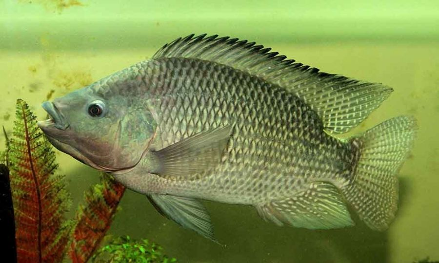

Alimentação das tilapias
Tilápias aproveitam bem carboidratos e gorduras como fonte de energia,
poupando assim a proteína das rações para crescimento.
O balanço energia digestível/proteína nas rações é fundamental
para maximizar a eficiência alimentar e o crescimento dos peixes.
Tilápia
abaixo veremos uma demostração de paragrafos
A Unidade de Beneficiamento de Pescados Luís Carlos Bufalo, em
Alvorada do Sul (PR), foi entregue nesta quinta-feira, 22.
Dedicado ao abate e processamento de peixes, o frigorífico foi
idealizado pela prefeitura em 2005, e as obras começaram em 2010
O projeto uniu os governos federal, estadual e municipal, que
investiram R$ 4,2 milhões.A indústria será administrada pela Cooperativa
Agropecuária e Industrial (Cocari). A entidade será responsável
pela integração com os produtores e pelo processamento da proteína.
No Brasil, a criação do peixe em lagoas, açudes e represas tem se
destacado na piscicultura. Fáceis de alimentar, resistentes a doenças e
boas reprodutoras, as tilápias logo se tornam negócio rentável. Toleram
bem grandes variações de temperatura e água com pouco oxigênio dissolvido.
paragrafo em negrito para fims de teste
As 4 espécies de tilápia mais comuns no Brasil:
- Tilápia azul. A tilápia azul é de origem africana.
- Tilápia do Moçambique. A tilápia do Moçambique vem da África (daí o nome).
- Tilápia do Nilo. Éssa é a espécie campeã de criação na piscicultura brasileira.
- Tilápia do Zanzibar. A tilápia do Zanzibar também é africana.

A Unidade de Beneficiamento de Pescados Luís Carlos Bufalo, em
Alvorada do Sul (PR), foi entregue nesta quinta-feira, 22. .
Dedicado ao abate e processamento de peixes, o frigorífico foi
idealizado pela prefeitura em 2005, e as obras começaram em 2010
O projeto uniu os governos federal, estadual e municipal, que
investiram R$ 4,2 milhões.A indústria será administrada pela Cooperativa
Agropecuária e Industrial (Cocari). A entidade será responsável
pela integração com os produtores e pelo processamento da proteína.
No Brasil, a criação do peixe em lagoas, açudes e represas tem se
destacado na piscicultura. Fáceis de alimentar, resistentes a doenças e
boas reprodutoras, as tilápias logo se tornam negócio rentável. Toleram
bem grandes variações de temperatura e água com pouco oxigênio dissolvido.
Café robusta
Até aonde sabemos o café robusta tem como origem a Africa central e ocidental
emtre suas caracteristicas podemos citar que A planta robusta rende maior colheita
do que a arabica e é menos susceptível a pestes e doenças sua fruta demora
de 10 a 11 meses a amadurecer, produzindo grãos ovais.
Uma vez torrado, o café robusta tende a apresentar um distinto paladar
terroso/queimado, normalmente mais amargo do que o café arabica
Abaixo junto com as imagens tiradas por uma técnica em Rondonia podemos ver
algumas curiosidades e carecteristicas do café robusta produzidos na região.

Aqui podemos ver a colheita do café sendo feita por peneira algo não muito comum pela região, por aqui costumamos a fazer a colheita com um pano estendido pelo chão, Anão ser o casso de que estes sejam para fazer café especial que é utilizado a peneira para se obter uma melhor separação dos grãos.

Já nessa imagem podemos ver os grãos de café ainda na arvore antes da colheita. Uma curiosidade Rondônia é o maior produtor de café na Amazônia e é o quinto em produção no Brasil.

Neste periodo o café ainda levara algums messes para que fique completamente maduro e possa ser colohido, É importante frizar que para uma melhor produção como qualquer outra cultura deve ser feitas as praticas de adulbação e a irrigação.

Na utima imagem temos um pé de café com sua maior parte dos grãos maduros e pronto para a colheita entretanto a algums grãos verdes e outros secos o que é muito comum mais se essa prosução for para fazer café especial eles devem ser descartados.